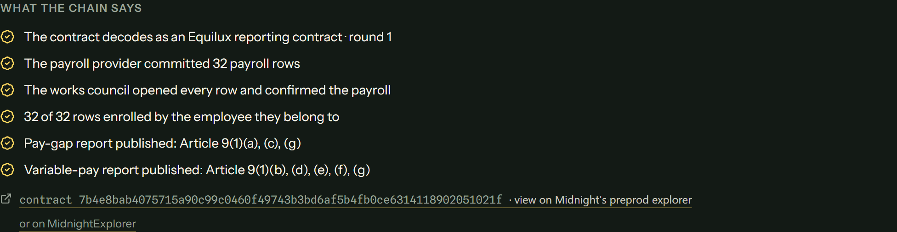
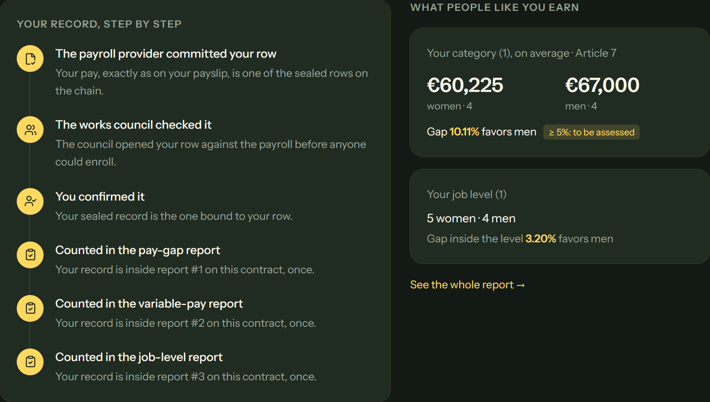

Equilux proves a company's gender pay-gap report came from its complete, real payroll, so staff, works councils and regulators can check it, without anyone seeing a single salary.
The company does its own sums and publishes a number. Everyone else has to take its word for it.
Checking the number would mean looking at every salary, which nobody should see.
Leave a few people out, nudge a figure, or just get it wrong, and nobody outside can tell.
"Our pay gap is 0%." Today there is no way to check that without opening the payroll.
Seven figures, every employer in scope. A category gap of 5% or more triggers a joint pay assessment, and in a dispute the employer must prove it did not discriminate.
| Without Equilux | With Equilux |
|---|---|
| The company says "our gap is 4%" | The company proves "our gap is 4%" |
| You trust the spreadsheet | Anyone checks the proof in seconds |
| Leaving someone out goes unnoticed | The report must cover every payroll row, or it is refused |
| Staff can't tell if they were counted | Each employee checks their own record, once |
| Whoever checks sees the salaries | No salary is ever published or shared |
Every row becomes a sealed code. Salaries stay with payroll.
Opens each sealed row against the real payroll and approves.
A record must match its row. An inflated salary matches nothing.
All seven legal figures, checked inside the contract, 16 people at a time.
Read the report from the chain. Employees check their own record.
Small groups stay private: if a group has fewer than 3 women or 3 men, its pay is not shown, so nobody can work out a colleague's salary.


A report staff, regulators and courts can check, from the payroll export they already have.
They already make the report. Equilux adds proof it covers the whole payroll.
Open every payroll row before the report goes out, without seeing names.
See they were counted, and what their group earns.
Read the proven figures from the chain instead of asking for the payroll.
Back a certificate with figures proven to come from the full payroll.
The employer: the legal duty is theirs. Reached through payroll and pay-transparency software that resells Equilux as a feature.
The work grows with headcount: about one transaction per person (346 for a 250-person company).
Analysis tools (Syndio, Trusaic, Figures) can't make the report checkable without showing salaries. Equilux sits beside them.
No price is set yet: the first pilots will tell us what it has to cost to be worth it.
Salaries, genders and job levels are private inputs on each person's device. They never reach the chain.
Midnight checks a zero-knowledge proof for every step. Only the proven figures, sealed codes and anonymous marks become public.
The public record is open: regulators, staff and journalists read the same proven figures, with no account and no data request.
Written in Compact, Midnight's language for private contracts: 14 circuits, 73 tests, every disclosure explicit.
Live product, up to 512 people per report, proven on Midnight's testnet. No customers yet.
Employers and works councils for a free pilot; payroll and HR software companies for a partner conversation.
equilux-lac.vercel.app
Docs: /docs
Pilot: /#pilot